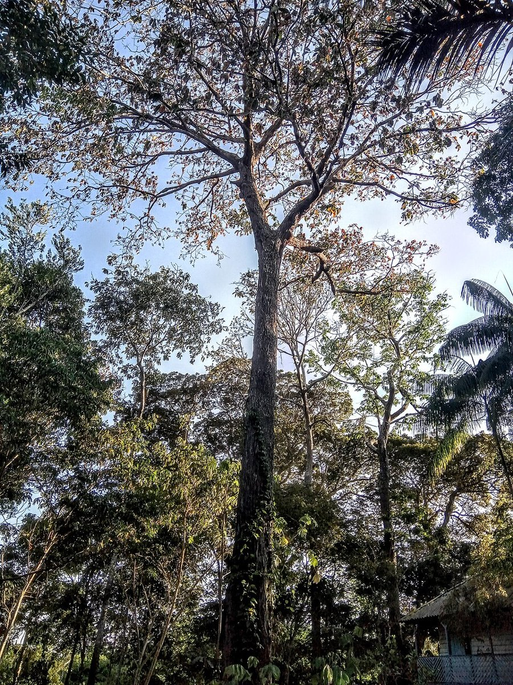
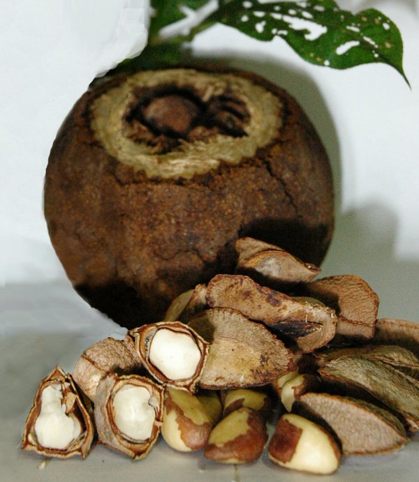
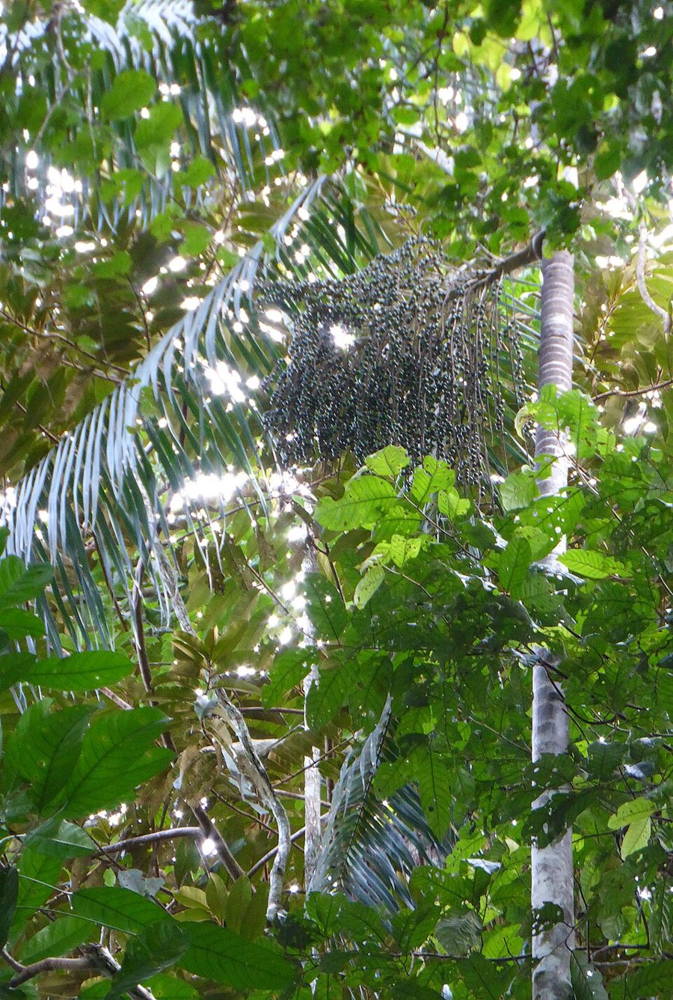
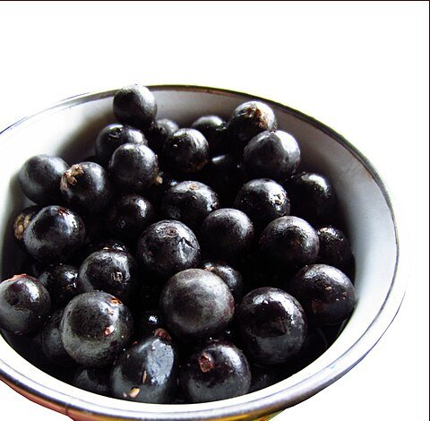
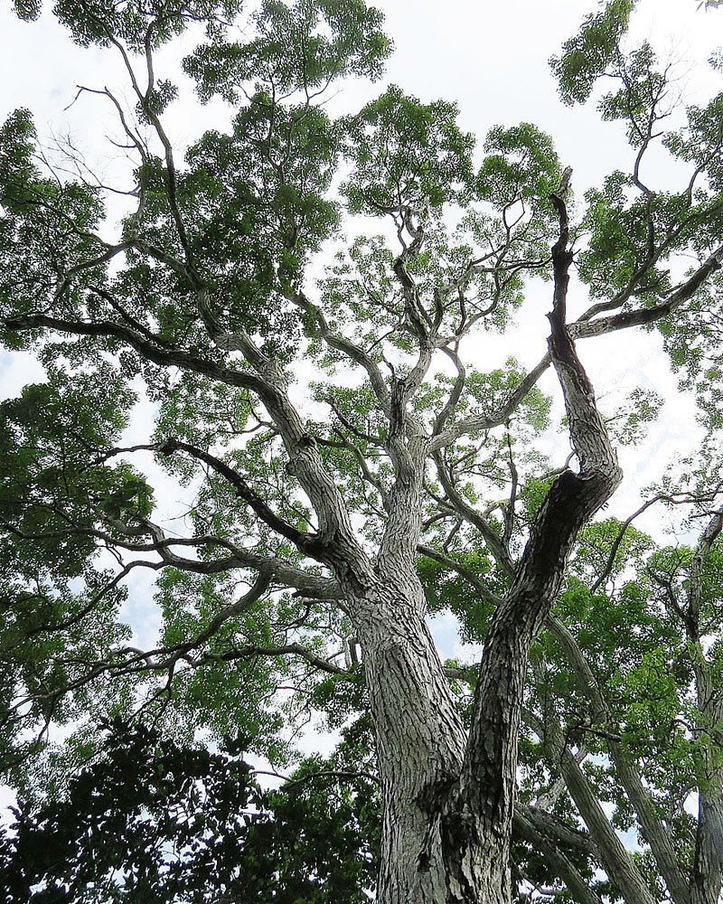
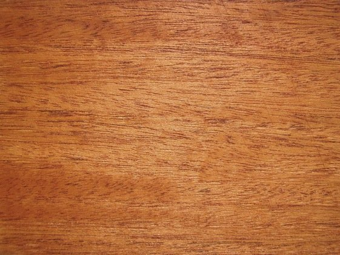

O bioma, seus recursos florestais e os caminhos para uma exploração sustentável.
Docente
Prof. Márcio Carneiro
Discentes
Genivan Pereira Lima Junior · Eduardo Oliveira Macedo · Adão Vinícius Pereira Martins Eduarda Rambo · Christophe Evangelista Reis · Davi Ferreira da Silva Almeida
Roteiro
O que vamos abordar
1
Localização e características
Onde está o bioma e o que o define
2
Clima, solo e vegetação
As condições físicas da floresta
3
Espécies florestais
Três espécies de importância econômica ou ecológica
4
Produtos e atividades
O que a floresta produz e como é explorada
5
Problemas ambientais
As ameaças atuais ao bioma
6
Proposta de manejo
Uma forma de exploração sustentável
7
Exemplo real
Projeto, empresa ou comunidade sustentável
Silvicultura
Produzir com a floresta em pé
1 · Localização e características
Onde está o bioma Amazônia
O bioma está localizado principalmente na região Norte do Brasil, mas também se estende por outros países da América do Sul.
Abrange grande parte de
AmazonasParáAcreRondôniaRoraimaAmapá
Além de partes de
MaranhãoMato GrossoTocantins
Outros países da América do Sul
PeruColômbiaBolíviaVenezuelaGuianaSurinameGuiana Francesa
4,2 mi km²área do bioma em território brasileiro
≈ 49%do território nacional — o maior bioma do Brasil
9estados brasileiros com área no bioma
Fonte: IBGE
3 / 19
1 · Localização e características
Principais características do bioma
Clima quente e úmido
Temperaturas elevadas e grande quantidade de chuvas durante boa parte do ano.
Florestas densas
Vegetação muito diversificada, com árvores de diferentes tamanhos e espécies.
Enorme biodiversidade
Abriga diversas espécies de plantas, animais e microrganismos.
Rios
Grande importância para o equilíbrio ambiental e para as populações que vivem na região.
Por essas características, a Amazônia é um dos biomas de maior importância ecológica do Brasil e do mundo.
4 / 19
2 · Clima, solo e vegetação
Clima: equatorial quente e úmido
Por estar próxima à linha do Equador, a região recebe muita energia solar o ano todo. O resultado é um clima de calor constante, pouca variação de temperatura e chuvas abundantes.
24–27 °Ctemperatura média anual, com pouca variação entre as estações
2.000–3.000 mmde chuva por ano, podendo passar disso em algumas áreas
> 80%de umidade relativa do ar na maior parte do ano
0–60 diasde estação seca: chuvas bem distribuídas ao longo do ano
Rios voadores: a floresta devolve à atmosfera, pela transpiração das árvores, grande parte da água da chuva. Essa umidade é levada pelos ventos e ajuda a formar chuvas em outras regiões do Brasil.
Classificação de Köppen: Af / Am (equatorial)5 / 19
2 · Clima, solo e vegetação
Solo: floresta rica sobre solo pobre
A maior parte da Amazônia tem Latossolos e Argissolos: solos profundos, bem drenados e antigos, mas ácidos e de baixa fertilidade natural. A exuberância da floresta vem dela mesma, não do solo.
Terra firme
Latossolos e Argissolos, pobres em nutrientes. Os nutrientes ficam guardados na própria vegetação.
Várzeas
Solos mais férteis, renovados todo ano pelos sedimentos trazidos nas cheias dos rios.
Terra Preta de Índio
Manchas de solo escuro e muito fértil, formadas pela ocupação de povos indígenas antigos (carvão, restos orgânicos e cerâmica).
Para a silvicultura: ao retirar a floresta, o ciclo se rompe e o solo empobrece rápido. Por isso o manejo precisa manter a cobertura vegetal.
1. Quedafolhas, galhos e frutos caem
2. Serapilheiracamada orgânica sobre o solo
3. Decomposiçãofungos e bactérias liberam nutrientes
4. Absorçãoraízes superficiais captam logo
Ciclagem de nutrientes
Fontes: Embrapa · Museu de Solos da Amazônia6 / 19
2 · Clima, solo e vegetação
Vegetação: Floresta Ombrófila Densa
A vegetação predominante é a floresta tropical úmida (ombrófila = "amiga da chuva"): alta, fechada e organizada em andares. Estima-se cerca de 2.500 espécies de árvores no bioma.
Estratos da floresta
Mata de terra firme
Áreas que nunca alagam — a maior parte do bioma. Árvores altas e madeiras nobres, como a castanheira.
Mata de várzea
Alagada periodicamente pelas cheias de rios de água barrenta. Ambiente típico do açaí e da seringueira.
Mata de igapó
Permanece alagada por longos períodos, às margens de rios de água escura. Plantas adaptadas à inundação.
Outras formações: campinaranas, savanas amazônicas e manguezais no litoral.
Fontes: IBGE · Embrapa7 / 19
3 · Espécies florestais
Três espécies de importância econômica e ecológica

Foto: Eric Bem dos Santos · CC BY-SA 4.0

Castanheira-do-Brasil
Bertholletia excelsa
Importância econômica
Produção da castanha-do-Brasil, alimento comercializado no Brasil e no exterior.
Importância ecológica
Contribui para a manutenção da biodiversidade e serve de alimento para diversos animais.

Foto: K. Zyskowski & Y. Bereshpolova · CC BY 2.0

Açaizeiro
Euterpe oleracea
Importância econômica
Produção do açaí, importante fonte de renda para comunidades amazônicas.
Importância ecológica
Seus frutos alimentam diversas espécies da fauna e a planta contribui para a proteção das áreas de várzea.

Foto: Dick Culbert · CC BY 2.0

Mogno
Swietenia macrophylla
Importância econômica
Madeira de alto valor comercial, utilizada na fabricação de móveis e produtos de madeira.
Importância ecológica
Faz parte da diversidade das florestas amazônicas e contribui para a estrutura do ecossistema.
8 / 19
4 · Produtos e atividades florestais
Produtos Florestais Não Madeireiros (PFNMs)
As atividades florestais da Amazônia dividem-se entre o manejo sustentável de itens não madeireiros, a extração de madeira e o extrativismo tradicional, que impulsiona a bioeconomia local.
Alimentos e frutos
Açaí, castanha-do-brasil (castanha-do-pará), cupuaçu, tucumã, buriti e cacau nativo.
Óleos e essências
Andiroba, copaíba e tucumã, muito usados nos setores cosmético e farmacêutico.
Fibras e borracha
Látex (borracha natural) e fibras vegetais aplicadas no artesanato e em utensílios.
9 / 19
4 · Produtos e atividades florestais
Óleos da floresta: da semente ao cosmético
Andiroba, copaíba e tucumã saem da floresta como matéria-prima e chegam ao mercado como cosméticos e produtos farmacêuticos — renda que depende da floresta em pé.
Copaíba
Óleo-resina com ação anti-inflamatória, cicatrizante e antisséptica.
Andiroba
Óleo extraído das sementes, base de sabonetes, hidratantes e esfoliantes.
Tucumã
Fruto de palmeira: alimento e óleo vegetal usado na hidratação da pele.
10 / 19
4 · Produtos e atividades florestais
Atividades florestais e madeireiras
Manejo Florestal Sustentável
Extração planejada e legal de toras de madeira, controlada por órgãos ambientais para garantir a regeneração da mata.
Espécies madeireiras exploradas: ipê, maçaranduba e jatobá.
Extrativismo vegetal tradicional
Coleta coletiva de sementes, raízes e plantas medicinais, repassada por gerações dos povos da floresta.
Bioeconomia e agrofloresta
Cultivo de espécies nativas em sistemas agroflorestais que unem a produção de alimentos à preservação da cobertura vegetal original.
11 / 19
5 · Problemas ambientais atuais
Pressões diretas sobre a floresta
Atividades que removem ou degradam a floresta e, muitas vezes, acontecem juntas na mesma área.
Desmatamento
Corte da floresta, principalmente para abrir pastagens e lavouras e para a ocupação ilegal de terras.
Perda de habitatSolo expostoEmissão de carbono
Queimadas
Fogo usado para limpar áreas desmatadas ou renovar pastos, que escapa para a mata. A floresta úmida não é adaptada ao fogo.
Morte de árvoresFumaçaSaúde pública
Garimpo ilegal
Extração de ouro em rios, terras indígenas e unidades de conservação, com destruição das margens e uso de mercúrio.
Rios degradadosMercúrioConflitos com povos indígenas
12 / 19
5 · Problemas ambientais atuais
Consequências para o clima, a vida e os rios
Mudanças climáticas
A perda de floresta libera carbono e reduz a umidade que as árvores devolvem ao ar, deixando a região mais quente e seca.
Mais calorSecas mais intensasMenos chuva
Perda de biodiversidade
Com a destruição e a fragmentação dos habitats, espécies de plantas e animais — muitas ainda desconhecidas — ficam ameaçadas.
Extinção de espéciesRecursos genéticosAlimentos e remédios
Poluição dos rios
Mercúrio do garimpo, esgoto sem tratamento, agrotóxicos e terra carregada das áreas desmatadas chegam à água.
Peixes contaminadosPopulações ribeirinhas
Desmatamento e queimadasmenos florestaclima mais quente e secomais incêndios e perda de espécies
13 / 19
6 · Proposta de manejo sustentável
Manejo florestal sustentável: produzir sem eliminar a floresta
Uso planejado dos recursos florestais aliado à conservação e à continuidade da produção.
Inventário
Conhecimento da área
Inventário florestal
Planejamento
Planejamento
Definição das áreas e árvores a serem manejadas
Exploração
Exploração planejada
Retirada controlada das árvores
Conservação
Conservação
Redução dos danos à floresta remanescente
Monitoramento
Monitoramento
Acompanhamento da regeneração e do crescimento da floresta
“A ideia não é deixar de utilizar a floresta, mas utilizá-la de forma planejada para que ela continue produzindo.”
14 / 19
6 · Proposta de manejo sustentável
Exploração de Impacto Reduzido (EIR)
Uma estratégia para diminuir os danos causados pela exploração florestal.
Planejar
Explorar
Monitorar
Regenerar
01
Antes da exploração
Inventário florestal
Mapeamento das árvores
Planejamento de estradas e pátios
Seleção das árvores que serão retiradas
02
Durante a exploração
Derrubada planejada
Direcionamento da queda das árvores
Redução da abertura de clareiras
Menor dano às árvores remanescentes
Redução do desperdício de madeira
03
Após a exploração
Monitoramento da área
Avaliação dos danos
Acompanhamento da regeneração
Manutenção da capacidade produtiva da floresta
“A exploração é planejada antes, controlada durante e acompanhada depois.”
15 / 19
6 · Proposta de manejo sustentável
Produção + conservação + continuidade
Manejo Florestal Sustentável
ECONÔMICA
Aproveitamento planejado da madeira
Redução de desperdícios
Geração de renda e empregos
Possibilidade de exploração em ciclos
AMBIENTAL
Menor dano às árvores remanescentes
Menor abertura desnecessária da floresta
Conservação da estrutura florestal
Manutenção da capacidade de regeneração
SOCIAL
Valorização da mão de obra local
Capacitação dos trabalhadores
Geração de oportunidades
Possibilidade de manejo comunitário
↔↔
“Explorar hoje sem comprometer a capacidade produtiva da floresta amanhã.”
16 / 19
7 · Exemplo de uso sustentável
Projeto RECA
Reflorestamento Econômico Consorciado Adensado — iniciativa de agricultores familiares da região amazônica, principalmente em Rondônia.
Sistemas agroflorestais
Espécies agrícolas cultivadas junto com árvores e espécies nativas da Amazônia.
AçaíCupuaçuPupunha
Produzir sem derrubar
Gera alimentos e renda sem precisar derrubar a floresta para ampliar a produção. O sistema ainda ajuda a manter a biodiversidade e melhora o uso do solo.
Sistema agroflorestal · imagem ilustrativa
Produção agrícola
+
Conservação da vegetação
+
Renda para as famílias
17 / 19
7 · Exemplo de uso sustentável
Natura
Empresa brasileira de cosméticos que usa ingredientes da biodiversidade amazônica em diversos produtos.
AçaíAndirobaMurumuruCastanha
Floresta conservadafonte dos recursos
Comunidadescoleta e produção dos ingredientes
Cadeia de fornecimentoingredientes vão para a empresa
Cosméticosprodutos no mercado
↩ Renda para as comunidades
A floresta passa a ter valor econômico quando permanece conservada: seus recursos são usados sem a necessidade de derrubá-la.
Valorização dos produtos da floresta
+
Renda para as comunidades
+
Conservação da biodiversidade
18 / 19
Referências
Fontes consultadas
IBGE
Síntese de descrição dos biomas brasileiros; Brasil em Síntese — Território.
Solos da Amazônia: Latossolos, Argissolos, várzeas e Terra Preta de Índio.
Ministério do Meio Ambiente
Biomas — Amazônia.
Instituto Floresta Tropical (IFT)
Manejo florestal e Exploração de Impacto Reduzido em florestas naturais de produção da Amazônia — Informativo Técnico 1.
Imazon
Custos e benefícios financeiros da exploração florestal de impacto reduzido em comparação à exploração convencional na Amazônia Oriental.
Imagens dos produtos e das espécies madeireiras do tópico 4: material reunido pelo grupo. Fotos de paisagem e das espécies do tópico 3: Wikimedia Commons (Eric Bem dos Santos, P. S. Sena, K. Zyskowski & Y. Bereshpolova, Agnieszka Kwiecień, Dick Culbert, Philipp Zinger — licenças CC BY / CC BY-SA).


.jpeg)

.jpeg)


 Sistema agroflorestal · imagem ilustrativa
Sistema agroflorestal · imagem ilustrativa